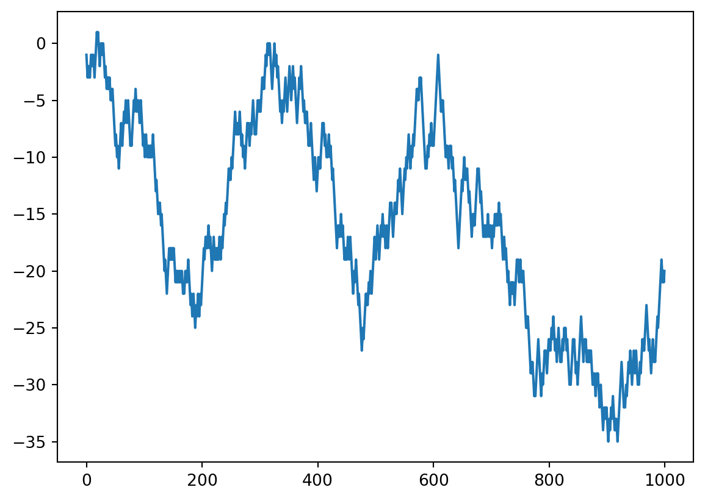

![]()
# pip install numpy
import numpy as npNumPy es una biblioteca fundamental para la computación científica en Python. Proporciona soporte para arreglos y matrices multidimensionales, junto con una colección de funciones matemáticas para operar con estos arreglos.
Creación de Arrays
Básicamente, hay cuatro tipos numéricos en el código NumPy, y cada uno puede tener algunos tamaños diferentes.
| Name | # of Bits | Python Type | NumPy Type |
|---|---|---|---|
| Integer | 64 | int | np.int_ |
| Booleans | 8 | bool | np.bool_ |
| Float | 64 | float | np.float_ |
| Complex | 128 | complex | np.complex_ |
# Unidimensionales
a = np.array([1, 2, 3, 4, 5], dtype = 'float64'); print(a); print(a.dtype)[1. 2. 3. 4. 5.]
float64# Bidimensionales
b = np.array([[1, 2, 3], [4, np.NaN, 6]]); print(b)
print(f'''
b.ndim : { b.ndim }
b.shape: { b.shape }
b.size : { b.size }
''')[[ 1. 2. 3.]
[ 4. nan 6.]]
b.ndim : 2
b.shape: (2, 3)
b.size : 6
np.array(["lunes", "martes", "miercoles"], dtype = str).itemsize
data = np.array([
("joe", 32, 6),
("mary", 15, 20),
("felipe", 80, 100),
("beyonce", 38, 9001),
], dtype=[("name", str, 10), ("age", int), ("power", int)])
data[data["power"] > 9000]["name"]
np.sort(data[data["age"] > 20], order = "power")["name"]array(['joe', 'felipe', 'beyonce'], dtype='<U10')Arrays con Valores Iniciales Específicos
# Array de ceros
c = np.zeros((3, 4)); print(c)[[0. 0. 0. 0.]
[0. 0. 0. 0.]
[0. 0. 0. 0.]]# Array de unos
d = np.ones((2, 3)); print(d)[[1. 1. 1.]
[1. 1. 1.]]# Matriz identidad
e = np.eye(4); print(e)[[1. 0. 0. 0.]
[0. 1. 0. 0.]
[0. 0. 1. 0.]
[0. 0. 0. 1.]]# Array de un valor constante
f = np.full((3, 3), 7); print(f)[[7 7 7]
[7 7 7]
[7 7 7]]# Array con valores aleatorios
g = np.random.random((2, 2)); print(g)[[0.25067324 0.02850246]
[0.09238464 0.33715183]]# Array de un rango de valores
h = np.arange(10, 20, 2); print(h)
print(np.arange(32).reshape(4, 1, 8))[10 12 14 16 18]
[[[ 0 1 2 3 4 5 6 7]]
[[ 8 9 10 11 12 13 14 15]]
[[16 17 18 19 20 21 22 23]]
[[24 25 26 27 28 29 30 31]]]# Array con un número específico de valores igualmente espaciados
i = np.linspace(0, 1, 5); print(i)[0. 0.25 0.5 0.75 1. ]Manipulación de Arrays
a = np.array([1, 2, 3, 4, 5])
print(a[0]) # Primer elemento
print(a[1:3]) # Subarray del índice 1 al 2
print(a[-1]) # Último elemento1
[2 3]
5a = np.array([[1, 2, 3], [4, 5, 6], [7, 8, 9]])
print(a[1, 2]) # Elemento en la fila 1, columna 2
print(a[:, 1]) # Todas las filas, segunda columna
print(a[1:3, 1:3]) # Subarray desde la fila 1 a 2 y columna 1 a 26
[2 5 8]
[[5 6]
[8 9]]a = np.array([1, 2, 3, 4, 5])
a[0] = 10
print(a)[10 2 3 4 5]a = np.array([1.1, 2.2])
a = np.append(a, [3.9, 4.6])
print(a)[1.1 2.2 3.9 4.6]a = np.insert(a, 1, values = [1.8, 2.0]); print(a)[1.1 1.8 2. 2.2 3.9 4.6]a = np.delete(a, [1, 2]); print(a)[1.1 2.2 3.9 4.6]a = np.array([[1, 2, 3], [4, 5, 6]])
print(a.ravel()) # Flatten the array
print(a.reshape((3, 2))) # Reshape, but don’t change data[1 2 3 4 5 6]
[[1 2]
[3 4]
[5 6]]a = np.array([1, 2, 3])
b = np.array([4, 5, 6])
c = np.concatenate((a, b), axis = None)
print(c)
# Dividir un array en múltiples subarrays
d = np.split(c, 3)
print(d)[1 2 3 4 5 6]
[array([1, 2]), array([3, 4]), array([5, 6])]# Máscaras Booleanas
a = np.array([1, 2, 3, 4, 5])
mask = a > 3
print(a[mask])[4 5]a = np.array([5, 1, 2, 4, 3])
print(np.sort(a))[1 2 3 4 5]a = np.array([1, 2, 2, 3, 3, 3])
print(np.unique(a))
print(np.bincount(a))[1 2 3]
[0 1 2 3]Operaciones Matemáticas
# Elemento x Elemento
a = np.array([1, 2, 3])
b = np.array([4, 5, 6])
print(5 * a)
print(1 + a)
print(2 % a)
print(a + b)
print(a * b)
print(a / b)
print(np.sqrt(a))[ 5 10 15]
[2 3 4]
[0 0 2]
[5 7 9]
[ 4 10 18]
[0.25 0.4 0.5 ]
[1. 1.41421356 1.73205081]b = np.append(b, [7]); print(a + b)--------------------------------------------------------------------------- ValueError Traceback (most recent call last) Cell In[24], line 1 ----> 1 b = np.append(b, [7]); print(a + b) ValueError: operands could not be broadcast together with shapes (3,) (4,)
# Funciones Agregadas
a = np.array([1, 2, 3, 4, 5])
print(f'''
np.sum(a) : { np.sum(a) }
np.mean(a): { np.mean(a) }
np.std(a) : { np.std(a) }
np.min(a) : { np.min(a) }
np.max(a) : { np.max(a) }
''')
# 2-D Arrays
b = np.array([[1,2], [3,4], [5,6]])
print(b.sum(axis = None))
print(b.sum(axis = 0))
print(b.sum(axis = 1))
np.sum(a) : 15
np.mean(a): 3.0
np.std(a) : 1.4142135623730951
np.min(a) : 1
np.max(a) : 5
21
[ 9 12]
[ 3 7 11]# Funciones con Matrices
a = np.array([[1, 2], [3, 4]])
b = np.array([[5, 6], [7, 8]])
print(np.dot(a, b))
print(a.T) # Equivalente a -> .transpose()[[19 22]
[43 50]]
[[1 3]
[2 4]]import matplotlib.pyplot as plt
n_steps = 1000
steps = np.random.choice([-1, 1], n_steps)
walk = np.cumsum(steps)
plt.plot(walk)
plt.show()
Otras
a = np.array([1, np.nan, np.inf, -np.inf, 5])
print(np.isnan(a))
print(np.isfinite(a))
print(np.isinf(a))[False True False False False]
[ True False False False True]
[False False True True False]a = np.array([1, np.nan, np.inf, -np.inf, 5])
print(np.nan_to_num(a)) # Reemplaza NaN con ceros y +/- inf con grandes números finitos.[ 1.00000000e+000 0.00000000e+000 1.79769313e+308 -1.79769313e+308
5.00000000e+000]np.where()
Es una función muy versátil y poderosa en NumPy que se utiliza para realizar operaciones basadas en condiciones lógicas. Su uso es esencial cuando se necesita aplicar lógica condicional a arreglos, y se vuelve aún más útil cuando se combina con Pandas para manipular DataFrames.
a = np.array([1, -.1, 0, 1.2, -3.1])
result = np.where(a > 0, 1, 0)
print(result)
# Obtener los índices donde se cumple:
indices = np.where(a > 0)
print(indices)[1 0 0 1 0]
(array([0, 3], dtype=int64),)import pandas as pd
# DataFrame de ejemplo
data = {
'Name': ['Alice', 'Bob', 'Charlie', 'David', 'Eva'],
'Age' : [24, 17, 30, 50, 15],
'Amount': [88, 92, 79, 95, 70]
}
df = pd.DataFrame(data)
df['Adult'] = np.where(df['Age'] >= 18, True, False)
df['Category'] = np.where(
df['Age'] < 18, 'Minor',
np.where(df['Age'] < 30, 'Young Adult', 'Adult')
)
df['NewAmount'] = np.where(df['Adult'] == False, df['Amount']*0.5, df['Amount'])
print(df) Name Age Amount Adult Category NewAmount
0 Alice 24 88 True Young Adult 88.0
1 Bob 17 92 False Minor 46.0
2 Charlie 30 79 True Adult 79.0
3 David 50 95 True Adult 95.0
4 Eva 15 70 False Minor 35.0Beneficios:
- Eficiencia: Es muy rápido porque realiza operaciones vectorizadas, aprovechando la eficiencia de NumPy.
- Flexibilidad: Permite aplicar lógica condicional compleja en una sola línea de código.
- Compatibilidad: Se integra perfectamente con Pandas, facilitando la manipulación de DataFrames.